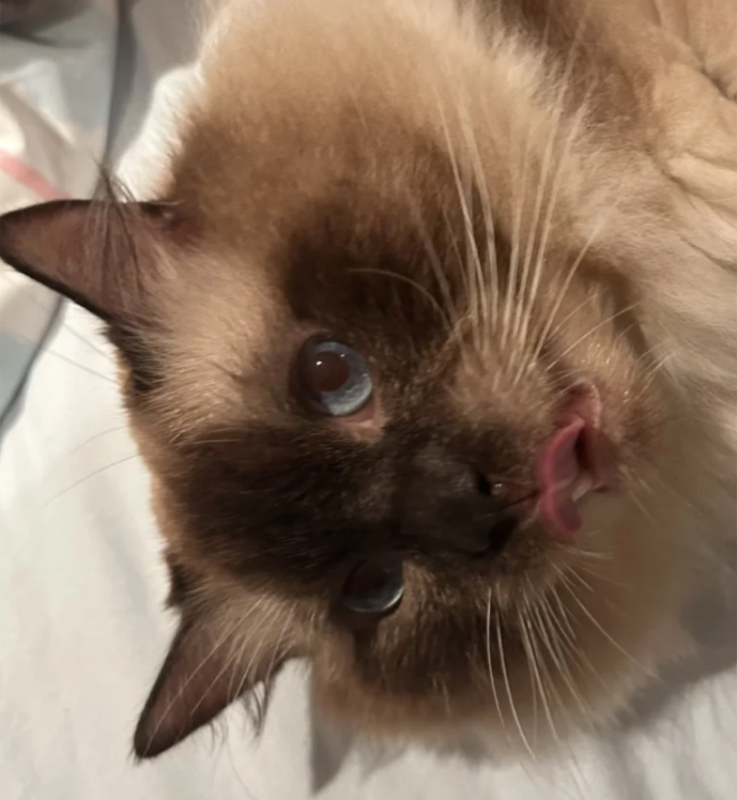
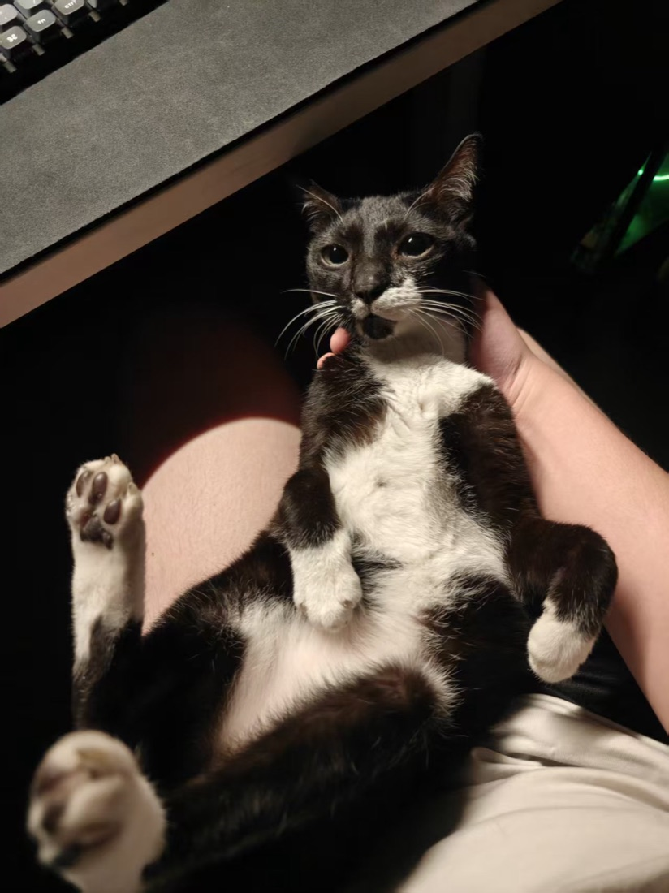
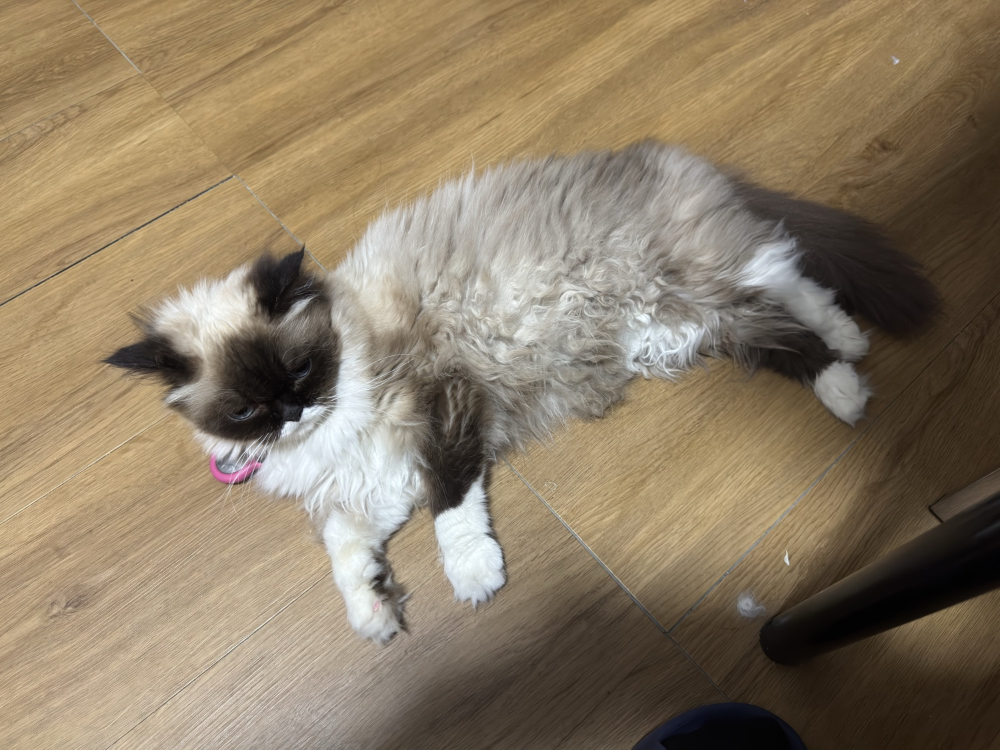
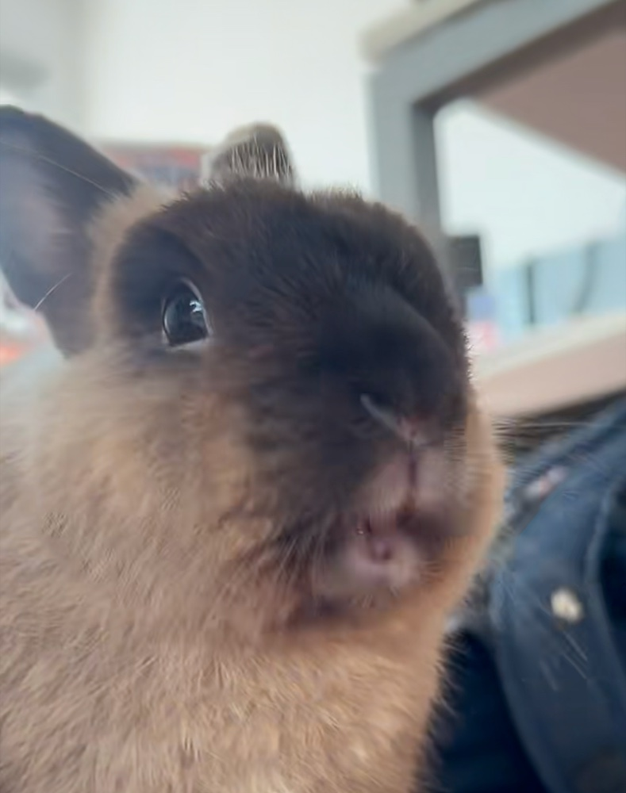
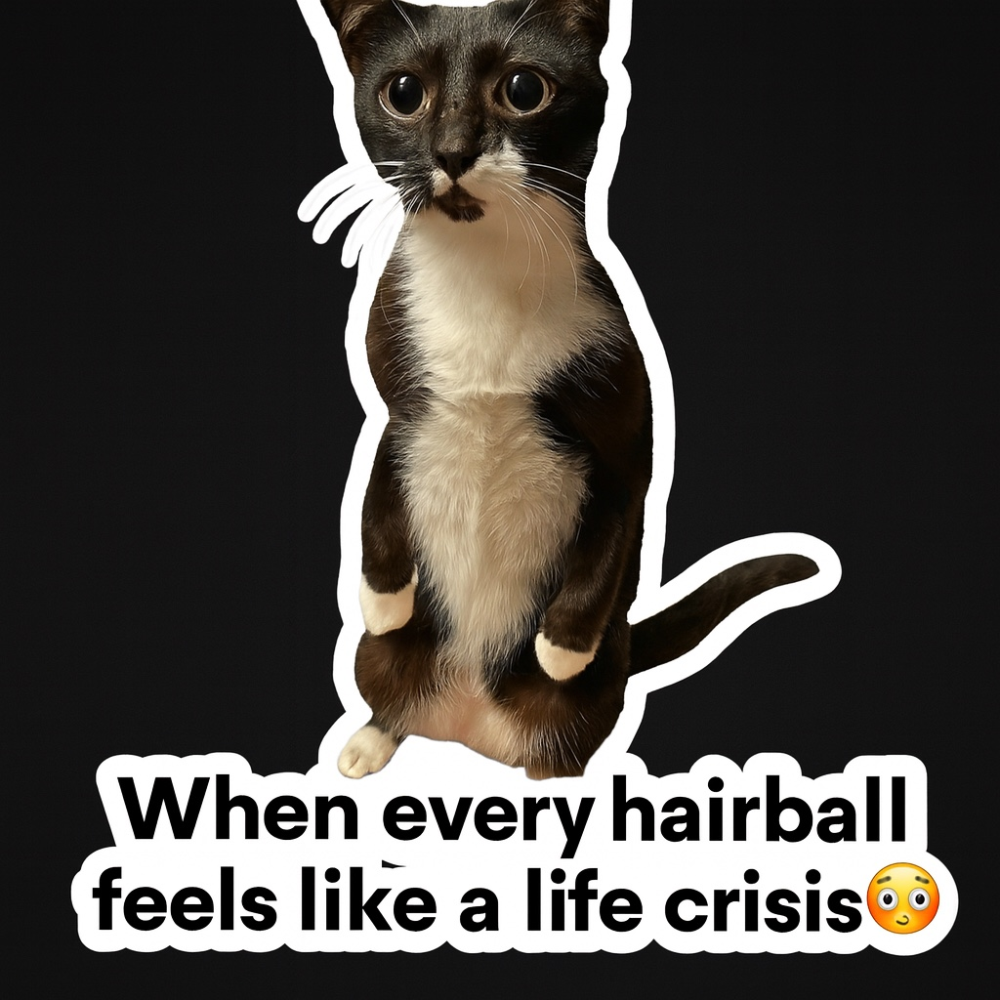

An AI pet-care companion for Singapore — profile-aware advice grounded in real local data, a live map of trusted services, and a daily-care dashboard. For dogs, cats, and the little ones too.




Built for — and tested on — our own cats & rabbit. 🐾
A pet parent asks: “My rabbit is off her food in this heat — what do I do, and who do I call nearby?”
A general model guesses. A Google search returns ten tabs. Neither knows the pet, the city, or the clinic two MRT stops away.
We pre-scraped and embedded Singapore's pet ecosystem into a retrieval store. The assistant answers via RAG over real services, products and reviews — personalised to each pet's profile and neighbourhood.
Chat answers retrieved from real SG data, scoped to your pet's breed, age, conditions & local rules.
Map of nearby groomers, vets, pet stores & cafés — nearest-first via geo search.
Daily logs become data-driven alerts — “vet check suggested” when symptoms appear.
Multi-pet profiles across 6 species — switch context in one tap.
text-embedding-3-small → 1536-dim vectors, HNSW indexPrisma owns app data (pets, care logs); a Prisma-independent pgvector store holds the SG knowledge base.
Every ingest upserts on a natural key and records a run — safe to re-run, local-first against Docker pgvector.
A self-contained search layer is the agent's tool surface — semantic + geographic recall in one call.
🛁 105 groomers 🩺 90 vets 🛍️ 70 pet stores ☕ 45 pet cafés
🐱 142 cat 🐶 110 dog 🐰 49 rabbit 🐹 24 small pet 🐦 7 bird 🐠 1 fish
A multi-agent assistant that plans each request and delegates to food, grooming, vet & meme specialists — every answer grounded in your pet's profile and neighbourhood.
Interactive Leaflet map with paw markers, radius slider and tabs for groomers, vets, stores, cafés & food — sorted nearest-first from your postcode.
Log meals, mood, weight & symptoms. The AI care alert is derived from your logs — surfacing real next actions, not hard-coded text.
Cookie-backed active-pet state means switching from your dog to your rabbit re-grounds every surface at once.
The Pet assistant plans each request and delegates to the right specialist — or answers simple questions itself.
Upload a pet photo → an OpenAI Agents tool edits it into a shareable meme.

Generated from one of our own cats 🐾
The assistant reflects how local pet care actually works — grounded in real SG vets, products, reviews and local rules, retrieved per pet. Not a simplified, generic model. A pet parent (or vet) can trust the source behind each answer.
The product can't exist without the pipeline: pre-embedded local knowledge + geo retrieval make profile-aware, neighbourhood-aware care possible — something ten browser tabs and a generic chatbot can't deliver.
Codex was our pair-builder across the whole stack — from architecture to the green test run.
Dev · test · review · ops — the entire project was built and hardened through Codex.
Next.js 16React 19React CompilerTailwind v4shadcn/uiLeaflet
OpenAI embeddingsVercel AI SDKOpenAI AgentsPostgres + pgvectorHNSW
Prisma 7Supabase authGoogle PlacesKohepets ingestOneMap geocode
Semantic match_knowledge_chunks + geo nearby_service_places RPCs over one Postgres.
1536-dim vectors kept in lock-step across embedder, column & search layer.
Server components, auth-scoped reads, zod-validated server actions, Biome, typed end-to-end.
A nervous first-time owner, a multi-pet household, a rabbit or fish keeper with nowhere to turn — all get trustworthy, local, profile-aware help in one warm place.
Little Lovely Pets — lovingly smart pet care. 🐶🐱🐰